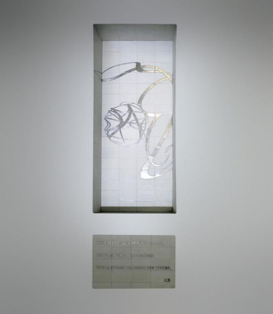

<section
  class="d-flex flex-wrap flex-md-nowrap flex-lg-nowrap align-items-center justify-content-around"
>
  <div class="w-50 containerSecondSectionImg mx-5">
    
  </div>
  <div
    class="w-50 containerSecondSectionText text-center d-flex flex-column align-items-center"
  >
    <h3 class="pb-4">IL RESTO DI NIENTE</h3>
    <p class="fontSize">
      Una nuova mostra al Museo Madre esplora la relazione tra architettura ed
      esperienze emotive.
    </p>
    <div>
      <a class="text-dark d-block pt-3 fs-8 fw-bold" href="#">SCOPRI DI PIU'</a>
    </div>
  </div>
</section>
